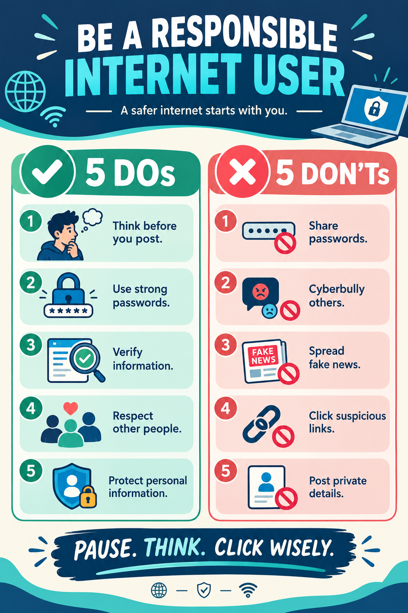

Output 1
The Impact of ICT on My Daily Life and Society
Information and Communication Technology (ICT) is part of almost everything I do. I wake up to a phone alarm, check messages from my family and classmates, and use the internet to research my lessons. Even small tasks, like paying bills, listening to music, or finding a route, now happen through apps and online services. ICT saves me time and gives me access to information that would once have required a trip to a library or an office.
Technology has clear advantages. It makes communication fast and cheap, because I can video call a relative abroad in seconds. It gives me free learning resources, such as online lessons and educational videos. It also creates opportunities for work and business, from online selling to remote jobs. However, technology has disadvantages too. Too much screen time can hurt my sleep, my eyes, and my focus. Social media can spread false information, encourage comparison with others, and expose people to cyberbullying, scams, and privacy risks. Technology is a tool, and its effects depend on how it is used.
In education, ICT has changed how I learn. I can attend online classes, collaborate on shared documents, and make presentations with free tools. Teachers can share modules and quizzes instantly, and students who cannot be in school can still keep up. In communication, ICT lets people share ideas across the world through messaging, email, and social platforms. Communities can organize quickly during emergencies, and ordinary people can have their voices heard.
With these benefits comes responsibility. As a digital citizen, I must think before I post, respect other people's opinions and privacy, and give credit to the creators of the content I use. I must verify information before sharing it, protect my passwords and personal data, and report bullying or harmful content. By using ICT with honesty, respect, and care, I can help make the digital world a safer and more helpful place for everyone.
Output 2
Digital Citizenship Poster: Be a Responsible Internet User

This poster reminds me and my classmates that the internet is a shared space. Safe and kind habits protect our privacy and make online communities better.
Output 3
ICT Infographic: The Role of ICT in Education and Society

This infographic summarizes five important uses of ICT and how they benefit education, business, communication, and society.
Output 4
Newton's Laws of Motion in Real Life
View the animated five-slide presentation above using Previous and Next, or download the editable PowerPoint file for classroom presentation.
Output 5
How ICT Changes Our Society
Watch the complete ICT awareness video directly above. Narrated using ElevenLabs; illustrated with AI-assisted educational visuals. Download MP4
Video topics covered
- Introduction: everyday uses and meaning of ICT.
- Communication: messages, video calls, collaboration, and emergencies.
- Education: online resources, virtual classrooms, and digital access.
- Employment and business: e-commerce, digital careers, and automation.
- Benefits and risks: healthcare, accessibility, misinformation, scams, and cyberbullying.
- Responsible technology use and conclusion.